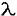

Consider light from a monochromatic point source of wavelength
 incident upon a Michelson interferometer. (See any of the still pictures from this module to see the setup.) The interferometer works in the following way. The light from the point source first strikes a beam splitter that divides the beam into two equal amplitude beams: a reflected one, which we will call Beam 1, and a transmitted one, which we will call Beam 2. It is assumed that the back surface of the beam splitter is the coated surface.
Beam 1 travels to the "translation" mirror of the interferometer. This mirror can translate back and forth in order to provide a desired path length difference, call it d, between the paths traveled by Beams 1 and 2. Beam 1 then reflects off of the translation mirror and travels back to the beam splitter. At the beam splitter Beam 1 splits into two equal amplitude beams. The beam of interest is the one that transmits through the beam splitter and travels to the observation screen.
Let us now discuss Beam 2. It is the transmitted beam created when the light from the point source was incident upon the beam splitter. It travels from the beam splitter through the compensator plate to the "tilt" mirror of the interferometer. In our interferometer this mirror can only be rotated about its vertical axis; we will call this angle of rotation f
. (In most Michelson interferometers it can be tilted with respect to two orthogonal axes.) The beam then reflects from the tilt mirror and travels back through the compensator plate to the beam splitter. At the beam splitter, beam 2 is divided into equal amplitude reflected and transmitted beams. We are interested in the reflected beam, which travels to the observation screen and interferes there with the beam that has traveled in the other arm of the interferometer. In this submodule the irradiance on the observation screen is calculated and displayed.